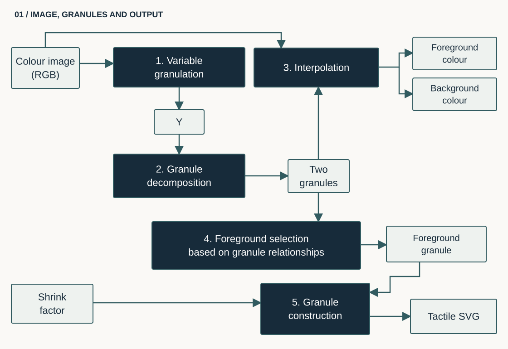
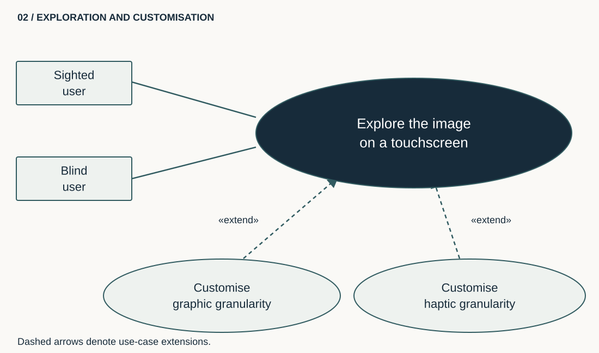
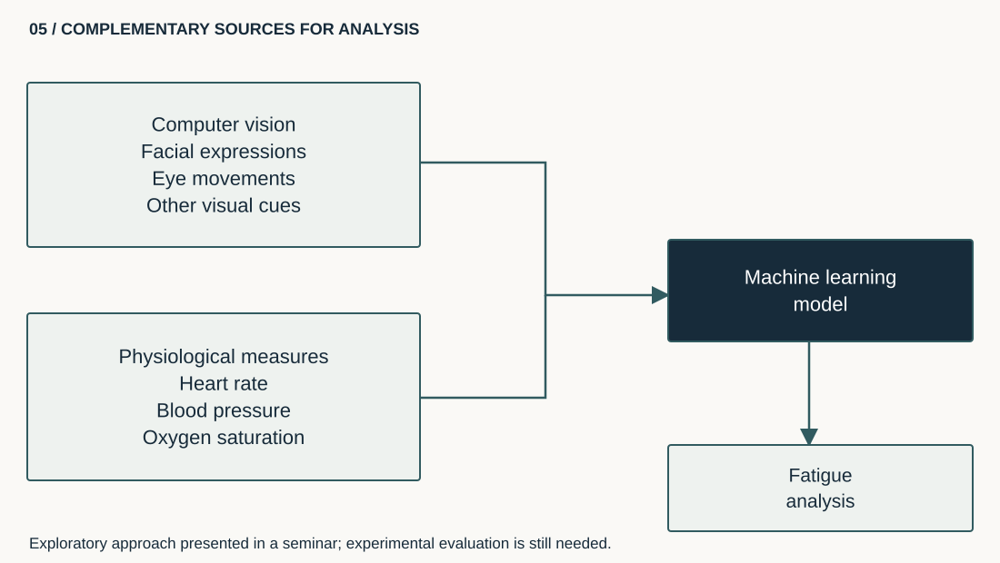
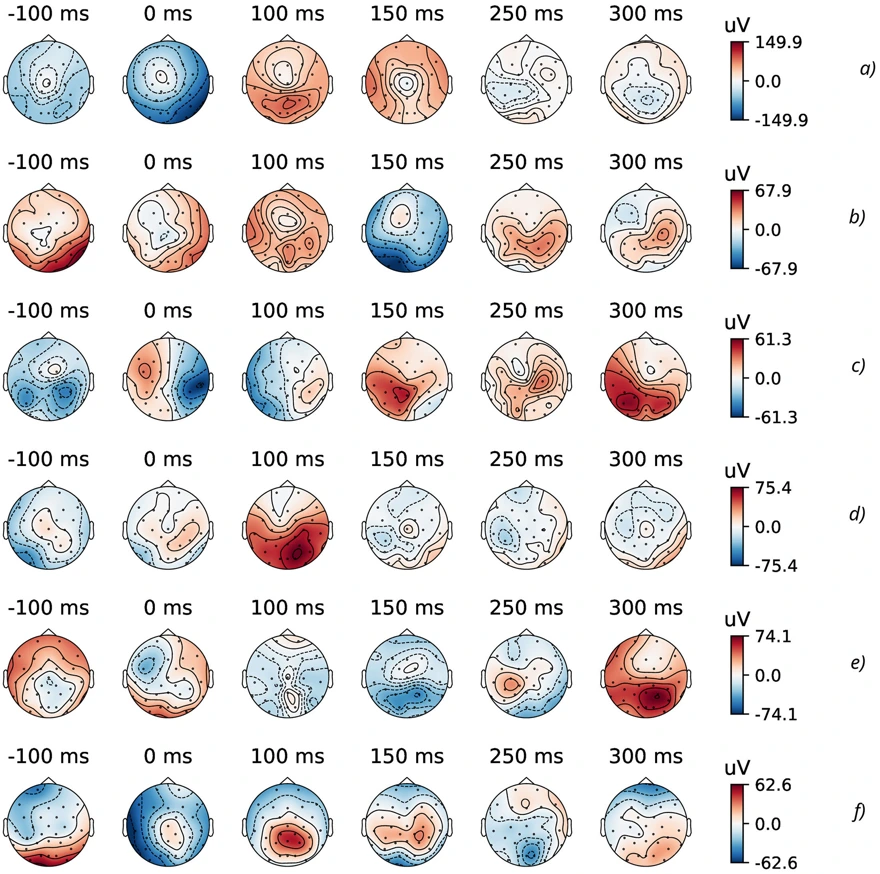
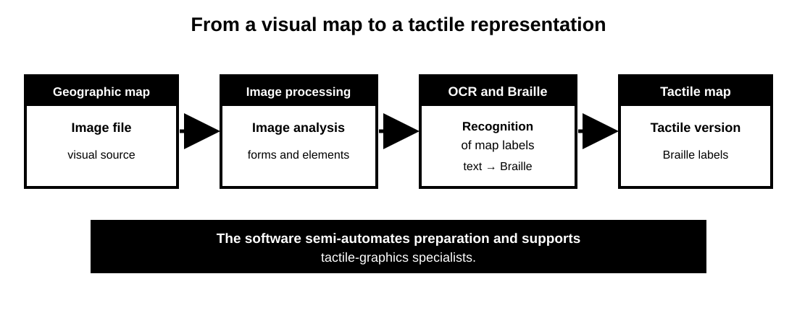

Sami Rojbi · PhD defended in 2022
I co-supervised (50%) a thesis on adapting digital documents into accessible tactile content within an international collaboration.
Scientific work
I work on digital accessibility, particularly non-visual access to images and documents. With my colleagues, I also study signal and image processing for assistive technology, machine learning and brain–computer interfaces.
Area 1
With Sami Rojbi and Mohamed Salah Gouider, I examined strategies for making web images accessible and the potential of audio and tactile alternatives to complement text descriptions.
These diagrams come from my seminar slides for the Ingénierie – Cognition – Handicap (ICH) department. They outline methodological approaches. Granularity refers here to the level of detail in a representation; evaluation with users remains to be established.




Area 2

Related work: Parallel Statistical and Machine Learning Methods for Estimation of Physical Load (2018).
Back to research themes ↑Area 3
I contributed to drafting and revising this collaborative study of electroencephalography (EEG) signals. We examine how temporal context and noise affect the classification of hand movements.
The study uses the public grasp-and-lift (GAL) dataset, which records actions involved in grasping and lifting an object.
Figures 2 and 8: Gordienko, Gordienko, Taran, Rojbi, Telenyk and Stirenko (2025), Frontiers in Neuroinformatics. Reduced previews; full-size originals are unchanged. Source article · CC BY 4.0.

The rows represent six stages of the movement: the hand starts moving (HandStart), a finger first touches the object (FirstDigitTouch), the loading phase begins (BothStartLoadPhase), the object is lifted (LiftOff), replaced (Replace) and released by the fingers (BothReleased). The columns show selected points in the sequence; the colours encode EEG amplitude on the figure’s scale. The maps visualise the recorded data, not classifier performance.
Time is expressed in milliseconds, amplitude in microvolts (µV). Red represents positive potentials, blue negative potentials and white values close to zero. Each row has its own colour scale, so colours should not be compared directly between actions.

The horizontal axis lists the six actions; the vertical axis shows mean AUC (area under the receiver operating characteristic, or ROC, curve). This chart summarises performance across the tested sequence lengths. Offset 0.5 has the highest mean AUC for each action. For mean AUC, the authors do not consider the difference between offsets 0 and 1 statistically significant. The similar panels do not establish a universal improvement from synthetic noise.
Offset is the label’s position within the input EEG sequence: beginning (0), middle (0.5) or end (1).
Area 4
With Nizar Bouhlel, I contributed to a tool that supports specialists in preparing tactile maps, presented at ASSETS 2014.

The process starts with a geographic map image. The software applies image-processing techniques, identifies labels with OCR, and transcribes recognised text into Braille for a tactile output. Tactile-graphics specialists are supported during preparation; the diagram summarises the principle described by the authors.
Publication: Nizar Bouhlel and Anis Rojbi, New tools for automating tactile geographic map translation, ACM ASSETS ’14, 2014, pp. 313–314. Read the ACM record and abstract.
Back to research themes ↑Area 5
My colleagues and I proposed an interface concept combining augmented reality and a brain–computer interface (BCI). It aims to adapt visual, audio and tactile feedback to the user’s needs.

The augmented-reality interface provides visual, audio and tactile interactions. EEG signals are recorded as part of a brain–computer interface (BCI) and analysed using machine-learning methods. This information can be used to adapt the feedback shown to the user. The diagram represents the concept proposed in the chapter; it is not an evaluation result.
Publication: User-Driven Intelligent Interface on the Basis of Multimodal Augmented Reality and Brain-Computer Interaction for People with Functional Disabilities, in Advances in Information and Communication Networks (2019), pp. 612–631. FICC 2018 conference; first published online on 6 December 2018. Read the Springer chapter.
Back to research themes ↑Scientific supervision
I co-supervise doctoral work on tactile accessibility and machine-learning methods applied to health data.
I co-supervised (50%) a thesis on adapting digital documents into accessible tactile content within an international collaboration.
Since 2024, I have co-supervised (25%) this international joint PhD on healthcare monitoring and prediction using machine-learning techniques.